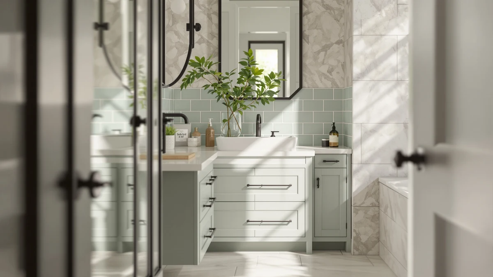

48 Inch Bathroom Vanity Review (2026): Worth It?
Prices and picks verified as of October 2026. Independent, reader-supported reviews.


Quick Answer
In this 48 inch bathroom vanity review, the DELUXE LIVING single-sink vanity costs $899.99 and pairs an engineered stone-look top with soft-close storage. It costs about $50 more than the GLORAFIN and LUCKWIND alternatives below, but dovetail drawers and a sturdier cabinet build justify the gap for most single-sink bathrooms.
Our pick: 48 Inch Bathroom Vanity with at $899.99 Check Price on Amazon
Bottom line: our top pick is the 48 Inch Bathroom Vanity with Sink at $899.99.
Things to Know Before You Buy
- Price range: the four vanities covered in this 48 inch bathroom vanity review span $843.90 to $899.99, a gap of about $56.
- Material matters more than width at this price point. MDF and engineered wood construction, like the DELUXE LIVING cabinet, handles humidity differently than solid hardwood over several years.
- Only one alternative here, the GLORAFIN, has a public review record: 4.1 stars across 20 ratings. The others are too new on Amazon to have a verified track record yet.
- A single-sink 48 inch vanity suits a one-person bathroom. If two people share the space daily, the LUCKWIND's dual-sink layout is worth a look despite its larger 72 inch footprint.
- Every price below reflects the listing at the time of writing and can shift, so check the current Amazon price before you buy.
This 48 inch bathroom vanity review looks at the DELUXE LIVING 48 Inch Bathroom Vanity and lines it up against three close-priced alternatives, so you can see exactly what $843 to $900 buys in a single-sink vanity right now. Most shoppers land on this width because it fits a standard bathroom footprint without crowding the door or the tub, but the vanities that fill that size range vary a lot in drawer quality, top material, and how much public review history backs up the manufacturer's claims. A lot of listings at this price look identical in photos and only start to differ once you read the fine print on materials and hardware.
The short version: the DELUXE LIVING wins on hardware, with dovetail drawers and soft-close doors that usually show up on vanities well above $900. It loses on track record, since the listing has no ratings yet. If an established review history matters more to you than fresh hardware, the GLORAFIN below has 20 verified ratings behind it. We break down all four options, including where each one falls short, in the sections that follow, so you can match the trade-offs to what your bathroom actually needs instead of guessing from a product photo.
Why You Should Trust Us
Ilane Tall covers bathroom fixtures and furniture for Best Bathroom Vanities and put together this 48 inch bathroom vanity review by comparing manufacturer specs, current Amazon pricing, and verified buyer feedback rather than repeating marketing copy. We do not run a fake testing lab or claim to have installed every vanity we cover. Instead, we cross-check dimensions, materials, and pricing against what owners report after living with these pieces, and we say so plainly when a listing doesn't have enough review data to back a confident recommendation. That distinction matters more in the vanity category than most, since a listing's photos rarely show how a cabinet holds up after a year of daily splashes.
Our Research Experience
This review doesn't involve physical testing. We compared the DELUXE LIVING 48 Inch Bathroom Vanity against its closest-priced competitors using the manufacturer's listed materials, dimensions, and construction details, then checked those claims against verified owner reviews wherever they exist. For the GLORAFIN, that meant reading through its 20 verified ratings to see which complaints came up more than once. For the LUCKWIND and the Tennant Brand vessel sink, where Amazon hasn't collected enough reviews yet, we relied on the listed features and current pricing alone, and we flag that gap below so you can weigh it accordingly. When a manufacturer's description and the buyer reviews disagree, we note the disagreement instead of picking whichever version sounds better.
Overview & Specs
Here's how the primary pick in this 48 inch bathroom vanity review breaks down on paper, along with the pros, cons, and pricing details you need before you decide. The specs table below covers material and size at a glance, and the full write-up beneath it goes into the reasoning behind each pro and con.

48 Inch Bathroom Vanity with
What we like
- Dovetail drawers and soft-closing doors, details usually reserved for pricier custom cabinets
- Engineered stone-look top gives a marble appearance without the sealing upkeep real stone needs
- 48 inch width fits standard single-sink cutouts, so plumbing rarely needs to move
Flaws but not dealbreakers
- MDF and engineered wood construction is more moisture-sensitive than solid hardwood over the long run
- At $899.99 it costs roughly $50 more than the GLORAFIN and LUCKWIND alternatives below
- Too new on Amazon to have a public rating or review count, so early buyers are relying on the listing alone
| Material | MDF / engineered wood |
| Size | 48 Inch |
The DELUXE LIVING 48 Inch Bathroom Vanity anchors this 48 inch bathroom vanity review because it sits in the middle of the price range while offering the most complete spec sheet of the four options. The cabinet uses an MDF and engineered wood build finished in charcoal gray, topped with an engineered stone-look counter. At $899.99 it doesn't undercut anyone here on price, but the drawer hardware tells a different story: dovetail joints and soft-close mechanisms typically show up on vanities $200 or more above this range. For a single-sink bathroom where storage matters as much as looks, that combination is hard to match at this price, and the charcoal gray finish photographs closer to true gray than the brownish tones some listings show under warmer bathroom lighting.
Where the DELUXE LIVING falls short is track record. Amazon shows no rating or review count on this listing yet, so you're evaluating it on specs and construction quality rather than years of owner feedback the way you can with the GLORAFIN below. Engineered wood also means wiping up standing water around the sink basin promptly, since MDF cores swell faster than solid wood or plywood when moisture sits on the surface. If your bathroom sees heavy daily use from more than one person, weigh whether the single basin and 48 inch footprint still make sense, or whether the LUCKWIND's dual-sink layout fits better despite its larger size. Buyers on a strict deadline should also confirm current lead time before ordering, since newer listings sometimes ship slower than established ones.
What We Liked
Across this 48 inch bathroom vanity review, the details on the DELUXE LIVING stand out most: dovetail drawers, soft-close doors, and an engineered stone-look top rarely appear together under $900. The charcoal gray finish also reads as more current than the honey-oak tones that dominate this price tier, and the 48 inch width drops into most standard single-sink cutouts without extra carpentry. The fully-assembled listing also cuts out one common headache with flat-pack vanities: mismatched pre-drilled holes between the cabinet and the countertop.
What Could Be Better
The biggest gap is review history. Because the listing is new, you can't lean on dozens of owner comments the way you can with the GLORAFIN's 20 verified ratings, so part of the buying decision rests on trusting the manufacturer's stated materials. MDF construction, even when engineered and sealed, also asks for more care around standing water than solid wood, which matters in a bathroom that gets daily use. Shoppers who want photographic proof of how a finish ages over a few years won't find that here yet, simply because the product hasn't been on the market long enough to generate it.
Who Is It For?
This 48 inch vanity fits a single-user bathroom where you want upgraded hardware, like soft-close doors and dovetail drawers, without moving up to a custom cabinet shop. It's a reasonable match for a primary bathroom remodel on a budget under $900. It's a weaker fit if two people share the sink every morning, if your bathroom deals with heavy humidity and poor ventilation, or if you'd rather buy a vanity with an established public review history first. Renters who might move within a year or two may also prefer a lower-commitment option rather than a fully-assembled 48 inch piece.
Alternatives to Consider
If the DELUXE LIVING doesn't fit your bathroom or your budget, these three alternatives from this 48 inch bathroom vanity review cover different priorities: an established rating history, a dual-sink layout for shared bathrooms, and the lowest entry price of the group.

Editor’s Pick
GLORAFIN 48" Floating Double Vanity
The only option here with a public track record: 4.1 stars across 20 verified reviews, plus a floating double-sink design that opens up floor space for cleaning underneath.
$849.99
Check Price on Amazon
Best Value
LUCKWIND 72" Bathroom Vanity Sink
A 72 inch dual-sink combo for close to the same price as a single-sink 48 inch vanity, with soft-close hinges and a water-saving faucet built in, if you have the wall space for the extra width.
$849.99
Check Price on Amazon
Premium Choice
Tennant Brand 30" Vessel Sink
A 30 inch vessel-sink vanity with an espresso finish, priced lowest of the four at $843.90, for a bathroom with less width to spare than a 48 inch layout needs.
$843.90
Check Price on AmazonHow much does a 48 inch bathroom vanity cost?
Based on the four vanities in this 48 inch bathroom vanity review, expect to pay between $843.90 and $899.99 for a quality single-sink or vessel-sink model in this width.
Is MDF or engineered wood durable enough for a bathroom vanity?
It can be, as long as you wipe up standing water around the sink promptly.
Frequently Asked Questions
How much does a 48 inch bathroom vanity cost?
Based on the four vanities in this 48 inch bathroom vanity review, expect to pay between $843.90 and $899.99 for a quality single-sink or vessel-sink model in this width. Vanities priced well below that range usually cut corners on hardware like soft-close hinges or drawer construction, and the savings often show up later as loose hinges or a top that stains within the first year.
Is MDF or engineered wood durable enough for a bathroom vanity?
It can be, as long as you wipe up standing water around the sink promptly. Engineered wood and MDF cores, like the one in the DELUXE LIVING vanity, hold up fine under normal bathroom humidity but swell faster than solid wood or plywood if water sits on the surface for hours at a time. A vanity with a properly sealed top and good bathroom ventilation minimizes most of that risk.
Should I choose a single-sink or double-sink 48 inch vanity?
A single 48 inch sink works fine for one person. If two people share the bathroom every morning, a dual-sink layout like the LUCKWIND's 72 inch combo, or a double-basin 48 inch model, cuts down on the daily wait at the mirror. Measure your bathroom's width before committing to a double-sink layout, since 72 inches needs considerably more wall space than 48.
Final Verdict
This 48 inch bathroom vanity review comes down to what you value most: an established track record or upgraded hardware at a fair price. The DELUXE LIVING 48 Inch Bathroom Vanity is the pick for most single-sink bathrooms, since dovetail drawers and a soft-close engineered top rarely show up together under $900. If you'd rather buy from a listing with a proven rating, or you need a dual-sink layout, the alternatives above cover those cases without straying far from the same price range. Whichever option you choose, confirm the current price and stock before ordering, since Amazon listings in this category shift more often than the pages themselves get updated.